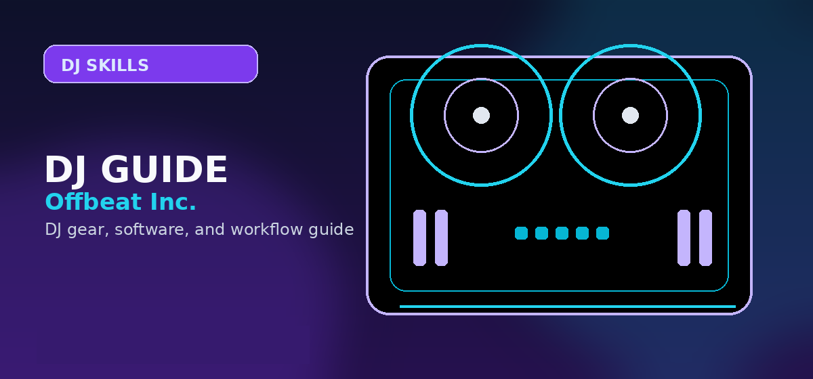

How to Promote DJ Mixes in 2026: SoundCloud, Mixcloud, Instagram & TikTok Strategy
Comprehensive guide to how to promote DJ mixes SoundCloud Mixcloud Instagram TikTok 2026 with practical recommendations and current buying notes — updated 2026.

Disclosure: This page uses affiliate links. We may earn a commission at no extra cost to you. Full disclosure →
In 2026, music streaming accounts for over 80% of recorded music income, but for the working DJ, the practical value usually comes from the audience system around the mix. Promoting your mixes is no longer just about gaining plays; it is about creating a repeatable path from discovery to bookings. Whether you are dropping a two-hour deep house set or a fifteen-minute high-energy edit, the goal is to turn listener curiosity into follows, bookings, email signups, and repeat engagement. To succeed in 2026, you must master a cross-platform approach: utilizing TikTok for discovery, Instagram for brand authority, and SoundCloud or Mixcloud as your high-fidelity archives.
SoundCloud & Mixcloud: The Conversion Hubs
These platforms remain the gold standard for full-length mixes. In 2026, your tracklist is one of your strongest trust assets. Instead of simply listing songs, use a formatted list in the description with track IDs, platform links, and optional gear notes. For example, mentioning that your seamless transitions are powered by the Pioneer DJ DDJ-FLX10 (~$1,600) allows listeners to click directly to a retailer. Mixcloud’s superior licensing makes it the safest bet for long sets, while SoundCloud’s algorithm is better for organic discovery. The key is the "first fold" of your description: place your most lucrative affiliate link—such as a Serato DJ Pro subscription or a Native Instruments Komplete bundle—in the first two lines to ensure visibility without requiring a "read more" click.
TikTok: Short-Form Discovery Hook
TikTok is the ultimate tool for rapid discovery in 2026. The trend has shifted from simple "mixing videos" to "educational workflow clips." Create 15-30 second clips highlighting a specific transition or a "secret" plugin trick using Xfer Serum or FabFilter Pro-Q 3. Use the "Link in Bio" to direct users to a curated "My Gear" landing page. Because TikTok users have short attention spans, avoid promoting expensive hardware in the video itself; instead, focus on useful, lower-cost setup notes such as Sennheiser HD 25 headphones (~$150) or affordable MIDI controllers. The objective is high volume and viral reach, driving traffic toward your longer mixes where the higher-ticket affiliate sales typically occur.
Turning Listeners Into Repeat Fans
Promotion works best when every platform points listeners toward the next useful action: follow the profile, save the mix, join an email list, check the tracklist, or watch a short breakdown of the transition they just heard.
Use gear notes sparingly and only when they genuinely help the listener understand the workflow. A clear tracklist, consistent visual identity, and reliable posting cadence matter more than pushing products into every caption.
Platform Comparison & Recommendation
Use each platform for the part of the funnel it handles best: discovery clips, full-length archives, trust-building posts, or direct listener follow-up.
| Platform | Best Use | Strength | Caution |
|---|---|---|---|
| SoundCloud | Full mix archive + discovery | Searchable catalog and repost culture | Copyright handling varies by upload |
| Mixcloud | Long-form licensed mixes | Safer home for complete DJ sets | Discovery is usually slower |
| TikTok | Short transition clips | Fast reach for visual hooks | Weak for full-set listening |
| Brand trust + gig proof | Good for reels, flyers, and social proof | Links are less direct than a website/email list |
Quick Verdict
- For Rapid Growth: Focus on TikTok. Use short-form gear clips to drive massive top-of-funnel traffic.
- For Booking Leads: Focus on Instagram. Use high-res imagery and "trust-building" stories to build trust with promoters and fans.
- For Long-term Loyalty: Focus on SoundCloud. Provide detailed tracklists and comprehensive gear guides in your descriptions.
Promoting your DJ mixes in 2026 requires a blend of artistic talent and strategic funneling. By treating your mixes as "demonstration videos" for the gear and software you love, you turn a creative passion into a sustainable business. Stop leaving money on the table with empty descriptions and generic posts. Use every upload to make your set easier to discover, easier to understand, and easier for promoters to evaluate.
Promotion checklist: Upload to Mixcloud (SEO-indexed), SoundCloud (social discovery), and YouTube (search traffic). Write a tracklist description with artist names. Cross-post a 60-second clip to Instagram Reels and TikTok. Mixcloud + TikTok compounding is the fastest path to bookings via Instagram DMs. Shop Focusrite Scarlett 2i2 on Amazon →
Shop on Amazon
Record and upload your mixes in high quality — audio interfaces on Amazon.
Frequently Asked Questions
What is the best platform to post DJ mixes?
Mixcloud is the best platform for full DJ mixes due to its legal licensing structure. SoundCloud works for shorter sets. YouTube is great for video mixes but requires Content ID management.
How do I avoid copyright strikes on DJ mixes?
Use Mixcloud (licensed platform), obtain DJ pool licenses, or use tracks with Creative Commons licensing. On YouTube, many DJs pre-emptively appeal all claims rather than fighting them.
Can DJ mixes go viral?
Yes, but less commonly than music. Viral DJ sets (like Boiler Room sets) spread through social media. Consistent quality, engaging visuals, and promotional posts improve discoverability.
How often should a DJ release mixes?
One quality mix per month is sustainable for most DJs. Consistency matters more than frequency. Regular releases build a following when combined with social media promotion.
Does posting mixes on Mixcloud help get gigs?
Yes. Venues increasingly check Mixcloud/SoundCloud before booking. A well-curated mix profile showing your genre range and mixing quality is one of the best electronic press kits you can have.